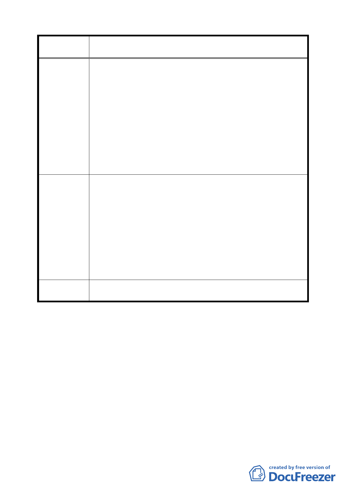

案 名 臺北市文山區都市計畫通盤檢討（主要計畫）案
為住宅區，再從住宅區變更為機關用地，用地由警察局、
民政局縮減剩民政局；設置用途從派出所、消防隊、里
民集會所，最後改為里民活動中心；預定完成期限最晚
則為 77 年 8 月。截至目前 95 年 6 月為止，已超過 17
年又 10 個月，且經查詢原預定之萬里里民活動中心，早
已另地興建完成，民政局已無本案用途之需求。
五、對於本案此類已劃設而未取得之公共設施用地，迄今近
18 年而未予執行，且該等用地機關其原需用目的皆已完
成，故本案應於本次文山區通盤檢討中予以導正，改編
訂回歸本案原本之住宅區，並對陳情人忍受多年土地不
得開發或利用之痛苦及損害予以救濟。
一、本案周遭同時其改編訂分區之同性質土地，目前之土地
使用分區為第三種住宅區，因此本案應予以比照辦理改
編為第三種住宅區為宜。
二、本案土地被編訂為機關用地之前，即與周遭土地一致，
建議辦法
乃是私有住宅區土地，後被劃設機關用地多年未予以徵
收，並未因此享有額外之利益，係為一種回復原狀之補
償，實不應以回饋原則相繩。
三、且行政區容積率為 400％，第三種住宅區為 225％，對周
遭環境衝擊僅有降低而未見提升，故不應以捐地回饋為
必要。
委 員 會 議 本陳情土地原則採市地重劃方式整體開發，請都市發展局與
決 議 土地開發總隊進行可行性評估後，另案辦理。
討論事項四
案名：臺北市文山區都市計畫通盤檢討細部計畫案
說明：
一、本件係市府 94 年 2 月 16 日府都規字第 09321545403 號函送
到會，並自 94 年 2 月 17 日起公開展覽三十天。
二、申請單位：臺北市政府。
三、說明會日期：94 年 3 月 4 日興業區民活動中心（文山區興隆
路二段 160 號 10 樓）、94 年 3 月 11 日文山區公所大禮堂（文
二六